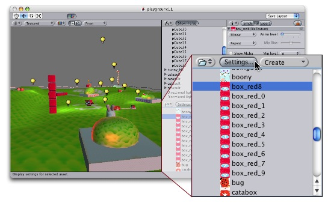
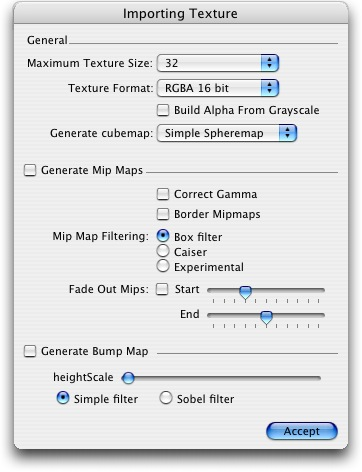

Textures are what brings your worlds to life! They are image or movie files that you put on your objects. As they are so important, there are a lot of properties. If reading this for the first time, jump down to Details, and return to the actual settings when you need a reference.
Which shaders you use for your objects put specific requirements on your textures, but the basic principle is that you can put any image file inside your project. If it meets the size requirements (specified below), it will get imported and optimized for game use.
This extends to multi-layer Photoshop or TIFF files - they are flattened on import, so there is no size penalty for your game.
Properties
The texture inspector looks a bit different from most others:
 |
The top section contains a few settings, and the bottom part contains a texture preview. The changes you make to the bottom part only affect the display, and not the texture itself.
| Property: | Function: |
|---|---|
Selects how the texture is filtered when it gets stretched by 3D transformations.
| |
| Increases texture quality when viewing the texture at a steep angle. Good for floor textures | |
Selects how the texture behaves when tiled
|
Import Settings
Textures all come from image files in your project folder. How they are imported is specified by the texture's import settings. You change these by selecting the file texture in the project window and clicking the import settings button on the toolbar above:
|  |
This brings up the import settings dialog:
|  |
| Property: | Function: |
|---|---|
| The maximum imported texture size. A lot of artist prefer to work with huge textures - scale the texture down to a suitable size witht his. | |
What internal representation is used for the texture. This is a tradeoff between size and quality. In the examples below we show the final size of a standard in-game texture of 256 by 256 pixels.
| |
| If | |
| Generate Mip Maps | |
| Select this to enable per-mip-level gamma correction | |
| Select this to avoid colors seeping out to the edge of the lower Mip levels. Used for light cookies (see below). | |
| 3 ways of mip map filtering is available to optimize image quality | |
| Enable this to make the mipmaps fade to gray the mip levels progress. This is used for detail maps. | |
| The first mip level to begin fading out at. | |
| The mip level where the texture is completely grayed out Generate Bump Map | |
| Increase the amount of bumpyness. | |
| Determin how the bumpyness is calculated |
Details
Shader Requirements
Alpha Channels
Supported Formats
Unity can read the following formats: PSD, TIFF, JPG, TGA, GIF, PNG, BMP, IFF, PICT. Of these, the 2 really interesting ones are PSD & TIFF - Unity can read multi-layer PSD & TIFF files just fine. They are flattened automatically on import, so there is no penalty from using them. This is important as it allows you to just have one copy of your textures that you can use from Photoshop, through your 3D modelling app and into Unity.
Texture Sizes
In order for textures to work in real-time enignes, their size must be a power of two on the sides. The allowed sizes are as follows: 2, 4, 8, 16, 32, 64, 128, 256, 512 or 1024 pixels. The textures do not need to have the same size horizontally and vertically, but each side have one of lengths mentioned above.
UV Mapping
When mapping a 2D texture on to a 3D model, some sort of wrapping is done. This is called UV mapping and is done in your 3D modelling app. Inside Unity, you can scale and move the texture using Materials. Scaling bump & detail maps are especially useful
Mip Maps
Mip Maps are a list of progressively smaller versions of an image, used optimise performance on real-time 3D engines. Object that are far away from the camera use the smaller textures.
Bump Maps
Bump maps are used by bump map shaders to make low-polygon models look as if they contain more detail. Unity uses normal maps encoded as RGB images. You also have the option to generate a normal map from a grayscale height map image.
Detail Maps
If you want to do a terrain, you normally use your main texture to show where there are grass, rocks sand, etc... If your terrain has a decent size, you will end up with a very blurry terrain. Detail textures hides this fact by fading in small details as your main texture get up close.
When drawing detail textures, a neutral gray is invisible, white makes the main texture twice as light and black makes the main texture completely black.
Cube Maps
If you want to use texture for reflection maps, you need to use Cube maps.
Light Cookies
An interesting way to add a lot of visual detail to your scenes is to use cookies - greyscale textures you use to control the precise look of in-game lighting. This is fantastic for making moving clouds and giving an impression of dense foilage. The Light page has more info on all this, but the main thing is that for textures to be usable for cookies, the following properties need to be set:
For spotlight cookies, use the following settings:
| Property: | Function: |
|---|---|
| Any setting that has an alpha channel | |
| Enabled | |
| Enabled | |
| Enabled |
For directional lights, use the following settings:
| Property: | Function: |
|---|---|
| Any setting that has an alpha channel | |
| Enabled | |
| Enabled | |
| Disabled |
For point lights, you need to use Cube Maps. To generate one, either make size textures and assign them as detailed in Cube Map Textures or generate on with the following settings:
| Property: | Function: |
|---|---|
| Any setting that has an alpha channel | |
| Any other setting than None. | |
| Enabled | |
| Enabled | |
| Disabled |